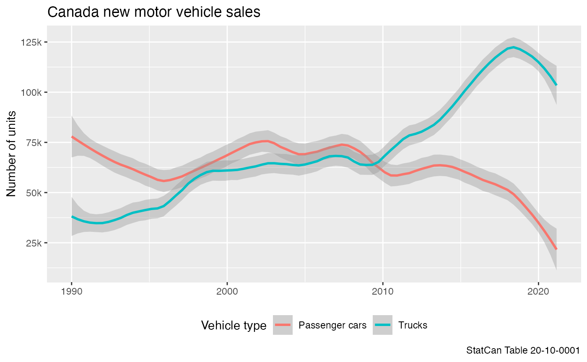

vignettes/working_with_large_tables.Rmd
working_with_large_tables.RmdMost StatCan tables are small in size and can easily processed in memory. However, some tables are so large that this is not a feasible strategy. Table 43-10-0024 is one such example and comes with a CSV file that is several gigabytes in size. In cases like this it is more useful to store and access the data as an SQLite database using the get_cansim_sqlite function instead of the usual get_cansim. In these circumstances it is also useful to cache the data for longer than just the current R session, and the data_cache option allows to specify a permanent location. It defaults to getOption("cansim.cache_path"), and if this option is not set it will only cache the data for the duration of the current session.
For this vignette we use the (rather small) motor vehicle sales data as an example.
library(dplyr)
#>
#> Attaching package: 'dplyr'
#> The following objects are masked from 'package:stats':
#>
#> filter, lag
#> The following objects are masked from 'package:base':
#>
#> intersect, setdiff, setequal, union
library(ggplot2)
library(cansim)One main difference to the get_cansim method is that get_cansim_sqlite does not return data but only a connection to the database. This allows us to filter the data before fetching the data into memory. When this is called the first time it will fetch the data, parse it into an SQLite database, index the main columns. This can take a significant amount of time, depending on the size of the table. In any subsequent call it will simply open a database connection to the cached database.
connection <- get_cansim_sqlite("20-10-0001")
#> Accessing CANSIM NDM product 20-10-0001 from Statistics Canada
#> Parsing data
#> Indexing GEO
#> Indexing Vehicle type
#> Indexing Origin of manufacture
#> Indexing Sales
#> Indexing Seasonal adjustment
#> Indexing REF_DATE
#> Indexing DGUID
#> Indexing GeoUIDWe can inspect the data by looking at the first few columns to get a general idea of what the data looks like.
head(connection)
#> # Source: lazy query [?? x 19]
#> # Database: sqlite 3.35.5
#> # [/private/var/folders/m1/ptq5j32n35ngc_qmbyptppn40000gn/T/Rtmp5cP6I4/cansim_20100001_eng/20100001-eng.sqlite]
#> REF_DATE GEO DGUID `Vehicle type` `Origin of manu… Sales `Seasonal adjus…
#> <chr> <chr> <chr> <chr> <chr> <chr> <chr>
#> 1 1946-01 Canada 2016A… Total, new mot… Total, country … Units Unadjusted
#> 2 1946-01 Canada 2016A… Total, new mot… Total, country … Doll… Unadjusted
#> 3 1946-01 Canada 2016A… Passenger cars Total, country … Units Unadjusted
#> 4 1946-01 Canada 2016A… Passenger cars Total, country … Units Seasonally adju…
#> 5 1946-01 Canada 2016A… Passenger cars Total, country … Doll… Unadjusted
#> 6 1946-01 Canada 2016A… Trucks Total, country … Units Unadjusted
#> # … with 12 more variables: UOM <chr>, UOM_ID <chr>, SCALAR_FACTOR <chr>,
#> # SCALAR_ID <chr>, VECTOR <chr>, COORDINATE <chr>, VALUE <dbl>, STATUS <chr>,
#> # SYMBOL <chr>, TERMINATED <chr>, DECIMALS <chr>, GeoUID <chr>To make good use of the data we will have to look at the metadata and inspect the member columns and variables available. The metadata will be available in the R session after the database connection has been opened. Trying to access the metadata before the connection has been opened will result in the package to attempt to download the data via the get_cansim call, which the get_cansim_sqlite function is trying to avoid.
get_cansim_table_overview("20-10-0001")
#> New motor vehicle sales
#> CANSIM Table 20-10-0001
#> Start Reference Period: 1946-01-01, End Reference Period: 2021-05-01, Frequency: Monthly
#>
#> Column Geography (11)
#> Canada, Newfoundland and Labrador, Prince Edward Island, Nova Scotia, New Brunswick, Quebec, Ontario, Manitoba, Saskatchewan, Alberta, ...
#>
#> Column Vehicle type (3)
#> Total, new motor vehicles, Passenger cars, Trucks
#>
#> Column Origin of manufacture (5)
#> Total, country of manufacture, North America, Total, overseas, Japan, Other countries
#>
#> Column Sales (2)
#> Units, Dollars
#>
#> Column Seasonal adjustment (2)
#> Unadjusted, Seasonally adjustedThis gives us an understanding of the available variables. For the purpose of this vignette we are interested in the breakdown of sales units by Vehicle type in Canada overall. The data is stored in its raw form in the database, the only processing done is that it is augmented by the GeoUID. In order to work with it we need to collect the data. If the only operation done is filtering, and no selection or renaming of columns was done before accessing the data, we can utilize the custom collect_and_normalize function to collect and at the same time normalize the data so it will appear the same way as if we had used the get_cansim function. This will add the category and hierarchy metadata and the normalized value column.
data <- connection %>%
filter(GEO=="Canada",
`Seasonal adjustment`=="Unadjusted",
Sales=="Units",
`Origin of manufacture`=="Total, country of manufacture",
`Vehicle type` %in% c("Passenger cars","Trucks")) %>%
collect_and_normalize()
data %>% head()
#> # A tibble: 6 x 29
#> REF_DATE GEO DGUID UOM UOM_ID SCALAR_FACTOR SCALAR_ID VECTOR COORDINATE
#> <chr> <chr> <chr> <chr> <chr> <chr> <chr> <chr> <chr>
#> 1 1946-01 Canada 2016A0… Units 300 "units " 0 v4216… 1.2.1.1.1
#> 2 1946-01 Canada 2016A0… Units 300 "units " 0 v4216… 1.3.1.1.1
#> 3 1946-02 Canada 2016A0… Units 300 "units " 0 v4216… 1.2.1.1.1
#> 4 1946-02 Canada 2016A0… Units 300 "units " 0 v4216… 1.3.1.1.1
#> 5 1946-03 Canada 2016A0… Units 300 "units " 0 v4216… 1.2.1.1.1
#> 6 1946-03 Canada 2016A0… Units 300 "units " 0 v4216… 1.3.1.1.1
#> # … with 20 more variables: VALUE <dbl>, STATUS <chr>, SYMBOL <chr>,
#> # TERMINATED <chr>, DECIMALS <chr>, GeoUID <chr>, val_norm <dbl>,
#> # Date <date>, Classification Code for Vehicle type <chr>,
#> # Hierarchy for Vehicle type <chr>,
#> # Classification Code for Origin of manufacture <chr>,
#> # Hierarchy for Origin of manufacture <chr>,
#> # Classification Code for Sales <chr>, Hierarchy for Sales <chr>,
#> # Classification Code for Seasonal adjustment <chr>,
#> # Hierarchy for Seasonal adjustment <chr>, Vehicle type <fct>,
#> # Origin of manufacture <fct>, Sales <fct>, Seasonal adjustment <fct>Given the data we can further filter the date range and plot it.
data %>%
filter(Date>=as.Date("1990-01-01")) %>%
ggplot(aes(x=Date,y=val_norm,color=`Vehicle type`)) +
geom_smooth(span=0.2,method = 'loess', formula = y ~ x) +
theme(legend.position="bottom") +
scale_y_continuous(labels = function(d)scales::comma(d,scale=10^-3,suffix="k")) +
labs(title="Canada new motor vehicle sales",caption="StatCan Table 20-10-0001",
x=NULL,y="Number of units")
When we don’t need the database connection any more we should remember to close it. This frees up resources and keeps the database handlers happy.
disconnect_cansim_sqlite(connection)Since we now have the option of a more permanent cache we should take care to manage that space properly. The list_cansim_sqlite_cached_tables function gives us an overview over the cached data we have.
list_cansim_sqlite_cached_tables()
#> # A tibble: 1 x 8
#> cansimTableNumber language timeCached sqliteSize title path
#> <chr> <chr> <dttm> <chr> <chr> <chr>
#> 1 20-10-0001 eng 2021-07-28 13:34:20 44.2 Mb New motor… cansim_2…
#> # … with 2 more variables: timeReleased <dttm>, upToDate <lgl>Cached data won’t update automatically, we will have to pass the refresh=TRUE option to refresh it manually when we want a fresh data pull from StatCan. If we want to free up disk space we can remove a cached table.
remove_cansim_sqlite_cached_table("20-10-0001")
#> Removing cached data for 20-10-0001 (eng)
#> NULL